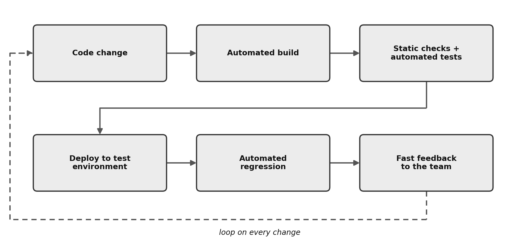
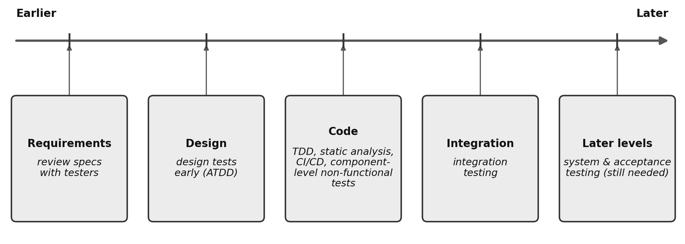
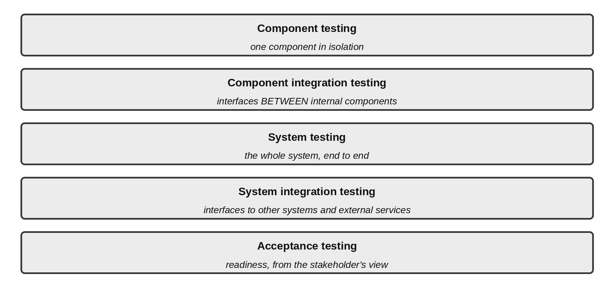
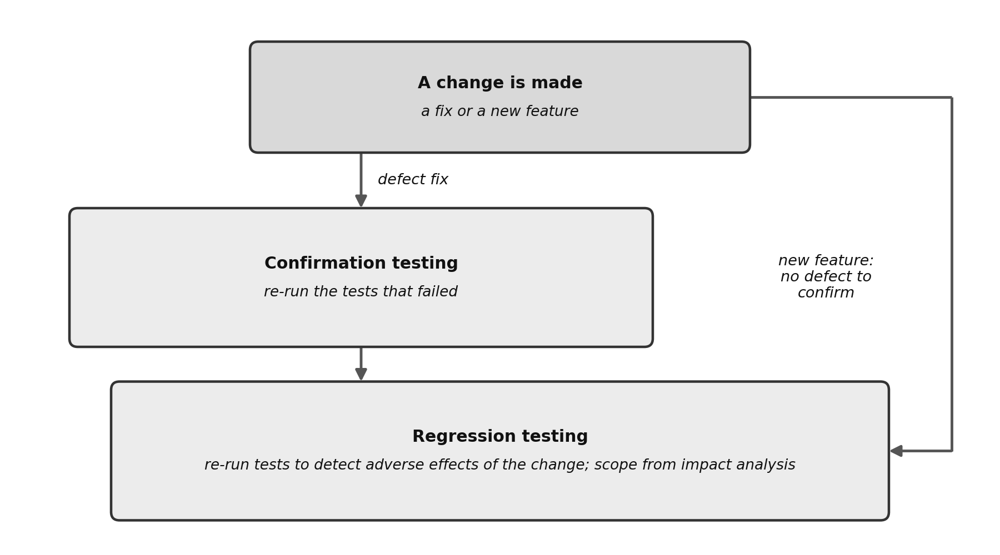
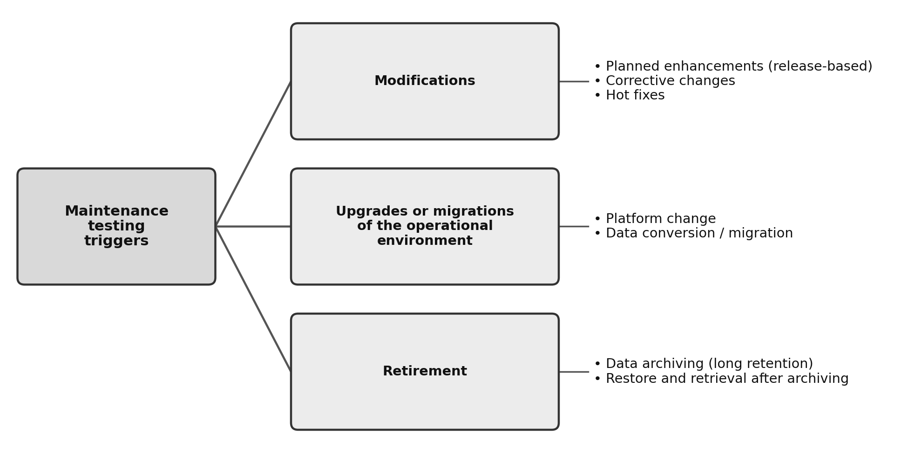

Chapter 2 — Testing Throughout the Software Development Lifecycle
Learning objectives: 10 · K1 2 / K2 8 / K3 0 · Exam questions from this chapter: 6
Keywords: acceptance testing, black-box testing, component integration testing, component testing, confirmation testing, functional testing, integration testing, maintenance testing, non-functional testing, regression testing, shift left, system integration testing, system testing, test level, test object, test type, white-box testing
This chapter places testing at the centre of software development. The six exam questions drawn from it tend to turn on clean classifications: which test level does this scenario belong to, which test type is being applied, is this confirmation testing or regression testing, and which maintenance trigger is in play. Once the distinctions in this chapter are clear, most of these questions become short classification exercises.
2.1 Testing in the Context of a Software Development Lifecycle
How the lifecycle shapes the test process (FL-2.1.1 — K2)
A software development lifecycle (SDLC) model describes how the development activities on a project relate to one another and where each one sits. The model is the project’s roadmap: it sets when the requirements become clear, when the code is written, and at which stage testing enters.
There are two broad families of model. Sequential models split development into linear phases that follow one another, such as the waterfall model and the V-model. Iterative models (for example, the spiral model and prototyping) and incremental models (for example, the Unified Process) deliver the product in repeating cycles and successive increments; Agile practices such as Scrum are widely used to organise this work. The chosen model changes the timing, scope, and workings of the test process directly. The syllabus names five areas the choice affects: the scope and timing of test activities, the level of detail of test documentation, the choice of test techniques and test approach, the extent of test automation, and the role and responsibilities of a tester.
In sequential models, dynamic testing starts relatively late, because a runnable build must exist first; static testing and reviews, however, can start much earlier. Documentation is more formal and detailed. The regression load grows steadily towards the integration phases near the end. Test automation is useful but not a hard dependency, and testers often work in separate test phases after development hands over. In iterative and agile approaches, dynamic testing starts very early and runs continuously, repeating in every cycle. Documentation is lighter and produced only as needed. The regression load grows sharply with each iteration, because every new increment is added on top of the working older system, which makes automation critical rather than optional; short cycles leave no room to run regression by hand. Most manual testing tends to use experience-based test techniques that need little prior test analysis and design. The tester is embedded in the development team as a continuous part of the process.
Table 2.1 — Sequential versus iterative and incremental models: the effect on testing
| Aspect | Sequential (waterfall, V-model) | Iterative and incremental (e.g., spiral, Unified Process) |
|---|---|---|
| Dynamic testing | Starts relatively late, once runnable code exists; static testing can start early | Starts early and repeats in every iteration |
| Test documentation | More formal and detailed | Lighter, produced as needed |
| Test techniques and approach | Testers do test analysis and design in the early phases, long before execution | Most manual testing tends to use experience-based techniques that need little prior test analysis and design |
| Regression load | Builds up towards the later integration phases | Grows with every new increment |
| Test automation | Useful, but not a hard dependency | Critical, because short cycles leave no time for manual regression |
| Tester’s role | Often works in separate test phases after development hands over | Embedded in the team throughout |
The V-model, the best-known sequential example, pairs each development phase on its left arm directly with a test level on its right arm. Iterative and incremental approaches work differently: each iteration delivers a working increment, so both static and dynamic testing may take place at every test level within it. In agile teams, an iteration is often a sprint of a few weeks. Figure 2.1 shows both shapes: the paired arms of the V, and the short loop in which an iterative team plans, builds, tests, and delivers an increment before starting again.
![Figure 2.1 — Sequential and iterative models compared. In the V-model (top), each development phase on the left arm is paired with a test level on the right arm: requirements with acceptance testing, system design with system testing, architectural design with integration testing, and detailed (component) design with component testing, with coding at the bottom of the V. In the iterative and incremental model (bottom), a plan, build, test, increment loop repeats, and every loop contains its own full set of test activities.](figures/fig_2_1_vmodel_vs_iterative.png)
In practice. Consider a team moving from a traditional waterfall project that releases once a year to an agile team running two-week sprints. By the third month, the team notices that running all the old tests by hand takes up an entire sprint. This is not a process mistake; it is the nature of the iterative model. Regression risk accumulates with every increment, which is why agile teams have to invest in test automation from the earliest sprints.
Exam focus. A question can give you a lifecycle model and asks about its direct effect on testing. The strategy is to contrast the two families: in sequential models, dynamic testing starts late (tied to code) and documentation is heavy; in agile approaches, testing repeats continuously and depends on automation. A tempting wrong option claims that in sequential models static testing must also wait until code is written. Document reviews (static testing) can begin at the earliest stage, as soon as drafts exist, whatever the software model.
Check your understanding
CYU 2.1.1-a. In a sequential model (for example, the V-model), when do dynamic test activities typically start?
- (a) As soon as the business requirements begin to be written
- (b) Relatively late, once a runnable build exists
- (c) Only when the user acceptance stage is reached
- (d) Never; sequential models contain no dynamic testing
Show answer
Answer: (b). Dynamic testing needs the system to be run, so it starts relatively late in a sequential model. Static testing of documents can start much earlier.
CYU 2.1.1-b. Why does the regression load grow with each new cycle in iterative and agile approaches?
- (a) Each new increment is added to the existing behaviour that must keep working
- (b) The volume of documentation multiplies each iteration
- (c) The test levels and environments change completely every sprint
- (d) Automation makes regression testing entirely unnecessary
Show answer
Answer: (a). Each sprint adds new features on top of the old ones, so the need to check that the old behaviour still works keeps growing.
CYU 2.1.1-c. An agile team delivers a working increment every two weeks and expects requirements to change throughout the project. Which statement about its manual testing is most likely to be true?
- (a) Detailed test procedures are written for every feature months before any code exists
- (b) Manual testing is postponed to a single system test phase at the end of the project
- (c) Manual testing stops, because every test is now automated in the pipeline
- (d) Most manual testing uses experience-based techniques that need little prior test analysis and design
Show answer
Answer: (d). The syllabus notes that agile projects favour lightweight documentation and extensive regression automation, and that most manual testing tends to use experience-based techniques (Chapter 4). Option (a) describes heavy up-front design, option (b) a sequential pattern, and option (c) ignores that manual testing is still needed.
Good testing practices for every lifecycle (FL-2.1.2 — K1)
Whatever development model is chosen, four universal good practices should be in place to protect quality. Every software development activity has a corresponding test activity, so that no development step is left outside quality control. Each test level has its own specific and distinct test objectives, a separation that stops the process from duplicating work and keeps the scope efficient. Test analysis and design for a given test level begin during the corresponding development phase, which puts the “early testing” principle directly into practice. And testers take part in reviewing work products as soon as draft documents are available, which catches defects before coding begins and supports the shift-left approach.
Exam focus. This objective is a direct list-recall question. Your task is to recognise these four universal rules among the options. Wrong options can sound sensible but are not one of the universal rules (for example, “automate 100 percent of the test cases on every project”). Check each option against the official four.
Check your understanding
CYU 2.1.2-a. Which of the following is one of the four universal good testing practices that apply regardless of the chosen model?
- (a) Automating every test case on the project without exception
- (b) Placing a corresponding, distinct test activity against each development activity
- (c) Running the test process only at the user acceptance stage to save time
- (d) Removing test documentation entirely to speed things up
Show answer
Answer: (b). A corresponding test activity for every development activity is the first of the four good practices.
CYU 2.1.2-b. When should test analysis and design for a given test level begin, as a good practice?
- (a) As soon as the corresponding development phase begins
- (b) Only after all coding on the project is 100 percent complete
- (c) In the last few days before the release decision
- (d) Only when a critical production failure is reported
Show answer
Answer: (a). Starting analysis and design alongside the corresponding development phase is an effective way to catch defects early.
CYU 2.1.2-c. Daniel, a test manager, drafts a checklist of testing practices that should hold on every project, whatever lifecycle it follows. Which item does NOT belong on this checklist?
- (a) Testers join reviews of user stories and specifications while these are still drafts
- (b) Component testing and system testing are given aims that do not duplicate each other
- (c) The same fixed test process is imposed on every project in the organisation, whatever its context
- (d) Each development activity, such as architecture design, is matched by a test activity
Show answer
Answer: (c). The four good practices are a corresponding test activity for each development activity, distinct objectives for each test level, early test analysis and design, and early tester involvement in reviews. Imposing one fixed process everywhere is not on the list, and it conflicts with the principle that testing is context dependent.
Test-first approaches: TDD, ATDD, and BDD (FL-2.1.3 — K1)
Three test-first approaches use test cases as a guide to steer development and secure quality from the start. Their shared philosophy is that the test is defined first, and the code is written only to make that test pass.
Test-driven development (TDD) is driven by the technical test cases the developer writes, at the component or code level. The workflow is to write a failing unit test first, write the simplest code that makes it pass, refactor both the tests and the code, and repeat the cycle. Acceptance test-driven development (ATDD) is driven by the formal acceptance criteria of user stories, at the acceptance or story level. Test cases are derived directly from the acceptance criteria before coding begins, and development is shaped to meet them. Behaviour-driven development (BDD) is driven by the behaviours the system should show, expressed in natural language, at the acceptance or story level. Its scenarios usually use the Given/When/Then format, which analysts, developers, testers, and business representatives can read and agree on together, and they should then be translated automatically into executable tests. In all three approaches, the tests created before implementation may remain in the automated test suite after the feature is complete, where they support later regression testing and document expected behaviour. All three implement the principle of early testing, follow shift left, and support an iterative development model.
Table 2.2 — TDD, ATDD, and BDD at a glance
| Approach | Driven by | Typical level | How to recognise it in a question stem |
|---|---|---|---|
| TDD | Technical test cases written by the developer | Component (code) | A failing unit test is written first, then just enough code to pass it, then refactoring |
| ATDD | Acceptance criteria of user stories | Acceptance (story) | Tests are derived from the acceptance criteria before the feature is coded |
| BDD | Desired behaviour, expressed in natural language | Usually story (business-facing) level | Given/When/Then scenarios that all stakeholders can read and agree on |
The Given/When/Then structure at the heart of BDD is easier to grasp with a concrete example. Given that the user has logged in and reached the basket page, When they press the “increase quantity” button next to a basket item, Then the basket total and the item count should update immediately. The shape is always the same: precondition (Given), action (When), expected result (Then).
Exam focus. You are given a short workflow or a developer’s behaviour and asked which test-first approach it is. The clues are clear: failing developer unit tests written first point to TDD; test cases derived from a story’s acceptance criteria point to ATDD; and the words “Given/When/Then” or “natural language all stakeholders can understand” point straight at BDD.
Check your understanding
CYU 2.1.3-a. A developer first sets up a small unit test that fails, then writes the simplest code to make it pass and optimises the structure. Which method is this?
- (a) Test-driven development (TDD)
- (b) Acceptance test-driven development (ATDD)
- (c) Behaviour-driven development (BDD)
- (d) Exploratory testing
Show answer
Answer: (a). A developer-level cycle that proceeds through unit tests before the code is written is the classic definition of TDD.
CYU 2.1.3-b. Natural-language scenarios written in the “Given/When/Then” pattern that non-technical stakeholders can fully agree on are the main characteristic of which approach?
- (a) TDD
- (b) ATDD
- (c) BDD
- (d) Exploratory testing
Show answer
Answer: (c). Expressing behaviour-based scenarios in the Given/When/Then structure in a shared language is the distinguishing feature of BDD.
CYU 2.1.3-c. Which statement best describes the difference between TDD and ATDD?
- (a) TDD derives its tests from acceptance criteria, while ATDD derives them from the developer’s unit tests
- (b) TDD is used only after release, while ATDD is used only before coding starts
- (c) In TDD the tests are discarded once the code passes, while in ATDD they are kept as automated tests
- (d) TDD directs coding through developer-written tests at the component level, while ATDD derives tests from the acceptance criteria of user stories
Show answer
Answer: (d). TDD works at the code level, through tests the developer writes before the code. ATDD starts from acceptance criteria, which makes it a business-facing, story-level approach. Option (a) swaps the two, and in both approaches the tests may remain as automated tests.
DevOps and the test process (FL-2.1.4 — K2)
DevOps culture brings software development (Dev) and system operations (Ops) together around a shared, continuous delivery pipeline. It rests on continuous integration (CI), automated builds, automated test runs, and continuous delivery (CD). DevOps brings benefits for testing, and it also brings challenges.
Figure 2.2 shows such a pipeline as a loop that runs on every code change and ends in fast feedback to the team.

From a testing point of view, the syllabus lists six benefits. The team gets fast feedback on code quality and on whether a change adversely affects existing code. CI promotes shift left, because developers are encouraged to submit high-quality code together with component tests and static analysis. Automated CI/CD processes make stable test environments easier to establish. Non-functional quality characteristics, such as performance efficiency and reliability, become more visible. Automation through the delivery pipeline reduces the need for repetitive manual testing. Finally, the scale and range of the automated regression tests minimise the risk of regression. DevOps also brings challenges: someone has to design and set up the delivery pipeline, adopt and keep up the CI/CD tooling, and find the extra resources that test automation needs, which can be hard to build and sustain. One further trap, which is not on the syllabus list, is the belief that automation removes the need for human testing.
Test automation does not make human testing unnecessary. Exploratory testing, usability testing, and user acceptance testing keep their value and their critical importance, because only a person can answer questions such as “is this interface sensible?” or “does the system feel smooth?”, which automated checks do not ask. The automation in a DevOps pipeline frees testers from routine work and buys them valuable time to focus on exactly this deeper testing.
Exam focus. A question can ask you to classify a statement as a benefit or a risk/cost of DevOps for testing. Fast automated feedback and stable environments are benefits; setting up and maintaining the pipeline, the CI/CD tools, and the test automation are challenges. Options claiming that DevOps makes manual testing obsolete or that the automation suite guarantees quality are wrong; rule out any such absolute statement.
Check your understanding
CYU 2.1.4-a. Which of the following is a risk or cost of adopting a DevOps culture with a continuous integration pipeline?
- (a) Getting instant feedback from the system after every code change
- (b) The high engineering effort needed to build and maintain the deployment pipeline and test-automation architecture
- (c) Test environments becoming far more stable, isolated, and reproducible
- (d) Large regression automation suites running continuously without human effort
Show answer
Answer: (b). Building, updating, and maintaining the automation infrastructure and the CI/CD pipeline is a real operational cost and effort. The others are benefits.
CYU 2.1.4-b. In an agile team applying DevOps successfully, which statement about test activities is correct?
- (a) The presence of automation makes exploratory, design, and usability testing entirely unnecessary
- (b) All tests showing green in the automation report guarantees no defects remain in the product
- (c) Exploratory, usability, and acceptance testing that need human analysis keep their critical value
- (d) All manual test perspectives should be removed to speed the process up
Show answer
Answer: (c). Automation is a great accelerator, but it never replaces intuitive and experience-based testing; the two approaches complement each other.
CYU 2.1.4-c. A team has just set up a CI pipeline that builds and tests every commit. Which of the following is a realistic benefit for testing?
- (a) The DevOps delivery pipeline has to be defined and established
- (b) CI/CD tools have to be introduced and then maintained
- (c) Developers receive fast feedback on whether a change adversely affects existing code
- (d) Test automation needs additional resources and can be difficult to establish and maintain
Show answer
Answer: (c). Fast feedback on code quality, including whether a change adversely affects existing code, is a benefit the syllabus names for DevOps. Options (a), (b), and (d) are the three challenges the syllabus lists, so they are costs rather than benefits.
Shift left (FL-2.1.5 — K2)
Shift left means performing testing earlier in the SDLC, for example before the code is written or before the components are integrated, moving activity toward the left side of the timeline. The syllabus notes that the principle of early testing from Chapter 1 is sometimes referred to as shift left.
It is important for the exam to be clear about what shift left does not mean. It does not mean that the system or acceptance testing done in the late stages of the project is neglected or removed. The late-stage tests are still carried out with the same rigour; it is just that the first moment quality is examined with a tester’s eye is no longer the end of the project.
The syllabus gives five good practices: reviewing specifications from a tester’s perspective; writing test cases before the code and running the code in a test harness during implementation (as in TDD and ATDD); using CI, and better still CD, so that automated component tests and fast feedback accompany every submission; completing static analysis of source code before dynamic testing or as part of an automated process; and, where possible, performing non-functional testing, such as performance efficiency testing, from the component test level onwards. Figure 2.3 places these practices on the lifecycle timeline and shows that the later test levels are still there.

Shift left may need extra training, effort, or cost early in the process, but it is expected to save effort and cost later. For it to work, stakeholders need to be convinced of the concept and bought into it.
Exam focus. Scenario questions can describe a team’s behaviour and ask whether it is an example of shift left. The core test is simple: if the activity examines quality at an earlier stage than the usual chronological flow (a tester questioning a rule as the analyst writes it, static analysis run before dynamic testing), it is shift left. A trap to watch for is the option saying that in shift-left projects the late-stage system or acceptance tests are cancelled as unnecessary. Shift left does not remove tests; it adds early-stage test activities to the process.
Check your understanding
CYU 2.1.5-a. Which of the following project practices is a direct example of shift left?
- (a) Static-analysis tools triggered automatically on every code package developers submit
- (b) Running all test activities only after the software goes live, due to time constraints
- (c) Postponing document review meetings to the test completion stage at the very end
- (d) Involving testers only when the user acceptance testing stage is reached
Show answer
Answer: (a). Static analysis entering early on every commit examines quality while still in the coding stage, a clear shift-left example.
CYU 2.1.5-b. What is the clearest, most honest trade-off shift left brings to a project?
- (a) A completely free quality increase with no extra effort or planning
- (b) Removing the end-of-project system tests entirely and halving the total project time
- (c) A luxury applicable only to projects with 100 percent test automation
- (d) Extra effort, training, or cost early on, which is expected to save effort and cost later
Show answer
Answer: (d). The syllabus states that shift left may need extra training, effort, or costs early in the process but is expected to save efforts and costs later. Option (a) ignores that early cost, option (b) wrongly drops later testing, and option (c) invents a precondition.
CYU 2.1.5-c. An agile team decides to adopt shift left. Which statement about its testing is correct?
- (a) System testing and acceptance testing are dropped, because defects are now found earlier
- (b) Shift left is mainly a way to reduce the amount of test documentation
- (c) Test activities are added early in the lifecycle, and later test levels such as system and acceptance testing still take place
- (d) Shift left conflicts with the principle of early testing
Show answer
Answer: (c). Shift left brings testing forward, for example through reviews of specifications and tests written before the code, but it does not mean that testing later in the lifecycle is neglected. Option (d) reverses the relationship, because the syllabus notes that the principle of early testing is sometimes referred to as shift left.
Retrospectives and process improvement (FL-2.1.6 — K2)
A retrospective is often held at the end of an iteration or a project, at a release milestone, or whenever it is needed; its timing and organisation depend on the SDLC model. The participants, who are not only testers but also, for example, developers, architects, the product owner, and business analysts, discuss three questions: which practices worked and should be kept, which did not and could be better, and how to build the improvements in and keep the successes going. The results should be recorded, and they are normally part of the test completion report (Chapter 5). The value is broader than producing a list of complaints. Retrospectives improve test effectiveness and efficiency, strengthen the quality of testware, support team learning and collaboration, and help teams improve the test basis and their development and test practices.
For test engineering, retrospectives are the main engine of continuous improvement and quality, because the abstract complaints raised there are turned into concrete test-improvement actions in the next sprint. If defect reports keep missing details such as screenshots or logs that developers need, the team adopts a defect-reporting checklist. If manual regression testing takes too long and delays sprint deliveries, test cases are put through risk analysis and the most critical ones are prioritised and quickly moved into automation. If requirements documents are full of ambiguities that cause rule conflicts during testing, testers start joining backlog-refinement meetings from the outset (shift left is put into practice). And if preparing the test data needed to run the tests blocks progress every sprint, central, prepared, versioned, reusable test data pools are created.
Exam focus. A question can ask the main purpose of retrospectives, or asks you to match a problem raised in a retrospective to the most sensible test-improvement action. The heart of a retrospective is turning process lessons into a concrete, measurable change. Watch for options that present the retrospective as a meeting to find culprits, judge people, or score individual performance for late-found defects. The retrospective’s aim is to improve the process, not the people.
Check your understanding
CYU 2.1.6-a. What is the main and primary purpose of a retrospective held in an agile team?
- (a) Identifying the people and developers responsible for critical defects found late
- (b) Analysing what went well and what did not, to improve the team and its way of working continuously
- (c) Scoring team members’ individual performance and reporting it to human resources
- (d) Formally approving the technical code architecture of new business requirements from the customer
Show answer
Answer: (b). A retrospective is not a place to blame the team or measure performance; it is an improvement tool where the team examines its process and looks for ways to work more effectively.
CYU 2.1.6-b. In a retrospective, the shared complaint is “our regression tests take too long to run by hand and block releases.” What is the most suitable concrete test improvement for this finding?
- (a) Filtering and prioritising the existing test cases by risk level and quickly automating the critical ones
- (b) Removing the issue from the agenda indefinitely to discuss again in later projects
- (c) Making the test team work overtime to run the whole regression suite by hand every sprint
- (d) Placing all the blame for the schedule delays directly on the testers
Show answer
Answer: (a). A bottleneck in the process (long-running tests) should be solved with a concrete, sensible process change such as risk-based prioritisation and automation.
CYU 2.1.6-c. Which outcome shows most clearly that a retrospective has led to real process improvement?
- (a) Detailed minutes of the meeting are signed and stored in the project archive
- (b) The team agrees on which individual was responsible for the late defects
- (c) A single fixed test process is announced for all future projects
- (d) An agreed improvement is followed up and changes how the team tests in the next iteration
Show answer
Answer: (d). The syllabus stresses that recommended improvements must be followed up, so a retrospective adds value when a lesson becomes a concrete change in the way of working. Recording the results is expected, but minutes alone change nothing, and blaming individuals or imposing a rigid process is not the aim.
2.2 Test Levels and Test Types
The five test levels (FL-2.2.1 — K2)
A test level is a group of test activities that are organised and managed together and tied to a specific stage of the software development lifecycle. The syllabus distinguishes the levels by a non-exhaustive list of attributes, so that test activities do not overlap, although levels may overlap in time. To tell one level from another, look at five attributes: each level’s own test object (what is tested), its own test objectives (the aim), the test basis it draws on (which documents it is written from), the typical defects and failures expected, and the approach and team responsibilities (who carries it out).
Component testing (also called unit testing) has a single code module, function, or unit as its object, and its focus is whether the piece of code works correctly in full isolation from the outside world; developers usually carry it out in their own development environment, often with a test harness or unit test framework. Component integration testing takes the internal interfaces and connections between components as its object, and its focus is whether the modules inside the system share the right data and talk to each other correctly; developers or testers carry it out. System testing takes the whole integrated product as its object, and its focus is whether the product’s end-to-end work flows, functional rules, and performance limits meet the targets; it may be carried out by an independent test team, and simulations of sub-systems can be used. System integration testing takes the interfaces between the system under test and other systems and external services as its object, whoever owns them, and its focus is whether the data exchanged across those interfaces, for example with a payment gateway or a separate in-house system, works without error; it needs a suitable test environment, preferably similar to the operational environment. Acceptance testing takes the whole system from the user’s or customer’s point of view as its object, and its focus is whether the product meets business needs and is ready to go live and be operated; ideally the intended users carry it out.
For component integration testing, the practical order depends heavily on the integration strategy. Bottom-up integration starts with lower-level components and adds callers above them; top-down integration starts with higher-level components and replaces unfinished lower components with stubs; big-bang integration connects many components at once. The first two strategies localise interface failures gradually, while big-bang integration can make the source of a failure harder to isolate. Integration testing is the umbrella term; the classic V-model in Figure 2.1 shows it as one level, which this syllabus splits into component integration testing and system integration testing.
Table 2.3 — The five test levels
| Test level | Test object | Focus | Typically performed by |
|---|---|---|---|
| Component testing | A single component (unit), in isolation | Does the component work correctly on its own? | Developers, in their development environment, often with a test harness or unit test framework |
| Component integration testing | Interfaces and interactions between components | Do the internal components exchange data correctly? | Developers or testers |
| System testing | The whole integrated system | End-to-end behaviour and non-functional quality characteristics | Often an independent test team |
| System integration testing | Interfaces to other systems and external services | Does data exchange with other systems and services work? | Testers, in an environment preferably similar to the operational one |
| Acceptance testing | The whole system, from the user’s or customer’s view | Does it meet business needs, and is it ready for deployment? | Ideally the intended users; also customers and operators |
Figure 2.4 lists the same five levels in the order the syllabus presents them; it is an order of presentation, not a ranking by size.

A point that is often missed about acceptance testing: its primary emphasis is not to hunt for as many new defects as possible. The main aim of this level is to show that the system meets business needs (validation) and to give management confidence that it is ready for deployment. Defects can still be found here, but the primary goal is not defect-hunting. Acceptance testing itself divides into forms such as user acceptance testing (UAT), operational acceptance testing (system-administration and backup tests), contractual and regulatory acceptance testing, and alpha and beta testing.
In practice. Take a food-delivery mobile app. Checking that the mathematical code function computing a 10 percent courier tip is correct is component testing. Verifying that the items in the user’s basket (the basket module) are carried to the payment page (the payment module) with the amounts intact is component integration testing. Trying the whole flow from opening the app, searching for a dish, adding it to the basket, choosing an address, and completing the order is system testing. Verifying that at the payment step the app connects to an external payment gateway to collect the money, or sends the order to a restaurant’s own ordering system through its API, is system integration testing. And, just before the app opens to everyone in the stores, having a 500-person pilot group of real couriers and a limited set of customers use it for a week with real-life scenarios to gather feedback is acceptance testing (beta testing).
Exam focus. Component integration testing and system integration testing are easy to confuse. One question avoids the trap: does the interface being tested stay inside the system under test, or does it connect that system to another system? If the interface is between the system’s own components, the answer is component integration; if it links the system to another system or an external service, the answer is system integration, even when both systems belong to the same organisation.
Check your understanding
CYU 2.2.1-a. The developers of a payroll system join the new tax-calculation component to the existing payslip component and test the data passed between them, starting from the top-level controller and using stubs for lower-level components that are not finished. Which test level is this?
- (a) Component testing
- (b) System integration testing
- (c) Acceptance testing
- (d) Component integration testing
Show answer
Answer: (d). The tests target the interface between two components of the same system, which is component integration testing; the top-down order with stubs is one of the integration strategies it depends on. Component testing would test one component in isolation, and system integration testing would test an interface to another system.
CYU 2.2.1-b. What is the primary emphasis of user acceptance testing, and of acceptance testing in general?
- (a) Aggressively hunting hidden code defects deep in the system architecture
- (b) Showing stakeholders that the product meets business needs and is ready to go live and be deployed
- (c) Technically checking the internal loop structures of the lines of code written
- (d) Trying developers’ function modules on their own, isolated from the outside world
Show answer
Answer: (b). Acceptance testing is less about finding defects and more a validation and confidence-building stage showing the system is ready for the business world.
CYU 2.2.1-c. A retailer’s new online-shop system sends every order to the company’s own warehouse-management system, which another internal team built and runs separately. The testers check the order data exchanged between the two systems. Which test level is this?
- (a) System integration testing
- (b) Component integration testing
- (c) Component testing
- (d) System testing
Show answer
Answer: (a). The interface links the system under test to another system, so this is system integration testing, even though both systems belong to the same organisation. Component integration testing would cover interfaces between components inside the online-shop system itself.
CYU 2.2.1-d. Which set of attributes does the syllabus use to distinguish one test level from another?
- (a) The test tool used, the size of the test team, and the duration of test execution
- (b) The test type, the test technique, and the coverage achieved
- (c) Test object, test objectives, test basis, defects and failures, and approach and responsibilities
- (d) The lifecycle model, the release date, and the number of test cases
Show answer
Answer: (c). These five attributes keep test levels from overlapping, because each level has its own object, objectives, basis, typical defects and failures, and approach and responsibilities. Test types and techniques, as in (b), can be used at every level, so they do not separate one level from another.
The four test types (FL-2.2.2 — K2)
Where test levels answer the question of when and over how much scope we test, test types group test activities by their specific objectives. There are four basic test types. Functional testing examines what the system does: does the software carry out the business rules, button behaviours, and functional requirements expected of it? Its main objective is to check functional completeness, functional correctness, and functional appropriateness. Non-functional testing measures how well the system performs those behaviours: it examines quality characteristics catalogued in standards such as ISO/IEC 25010, including performance efficiency, compatibility, usability (also called interaction capability), reliability, security, maintainability, portability (also called flexibility), and safety. Black-box testing derives test cases without ever looking inside the source code, working only from inputs and outputs and from the specified business behaviour and requirements. White-box testing builds test cases from the system’s internal structure, such as code, architecture, work flows, and data flows.
The core rule about types and levels is that every test type can be applied at every test level without exception. A test type is not confined to a single level. A function’s speed, for example, can be measured at the component level, and functional behaviour can be checked all the way up at the acceptance level.
The two pairs ask two different questions: functional or non-functional asks what quality is checked, and black-box or white-box asks where the tests are derived from, so one test usually belongs to one type from each pair.
Table 2.4 makes this rule concrete with one example for each type at each level. The focus changes from level to level, as the syllabus notes, but none of the four types belongs to a single level. Security, for example, appears at the component level and at the system integration level, not only at the system level.
Table 2.4 — The four test types at each test level (examples)
| Test level | Functional and non-functional | Black-box and white-box |
|---|---|---|
| Component | Functional: an interest function returns the correct amount. Non-functional: a validation function rejects an injection string (security). | Black-box: from the function’s specification. White-box: every branch of its code covered. |
| Component integration | Functional: the basket passes the correct total to payment. Non-functional: the link copes with peak message volume. | Black-box: from the interface specification. White-box: the call paths between the modules covered. |
| System | Functional: an order can be placed end to end. Non-functional: response times hold with 5,000 concurrent users. | Black-box: from user stories and screen designs. White-box: the main work flows covered. |
| System integration | Functional: a payment request reaches the bank’s service and returns. Non-functional: the link resists interception (security). | Black-box: from the external API specification. White-box: the data flows between the systems covered. |
| Acceptance | Functional: a user completes a real business task. Non-functional: screen-reader users can operate the site (usability). | Black-box: from business scenarios. White-box: every path of the implemented approval work flow covered. |
Exam focus. Two distinctions solve the questions here. First: if the question asks what the system does or whether a button works correctly, the answer is functional testing; if it measures how fast, how secure, or how usable the system is, the answer is non-functional testing. Second: any option that limits a type to one level (“non-functional tests can only be done at the system level”) is wrong, because a function’s speed can be measured even at the code (component) level.
Check your understanding
CYU 2.2.2-a. A test team measures the system’s response times for a new ticketing platform under the heavy demand of 5,000 concurrent users. Which test type is this?
- (a) Functional testing
- (b) Non-functional testing
- (c) White-box testing
- (d) Confirmation testing
Show answer
Answer: (b). It measures not what the system does but how well it performs under load (performance efficiency), so this is non-functional testing. White-box testing derives tests from internal structure, which this load test does not use. The test is probably also black-box, because the four types overlap; what makes it non-functional is that it measures how well the system performs.
CYU 2.2.2-b. An exam statement reads, “non-functional properties such as security and performance can be tested only once you reach the system test level.” What is true of this claim?
- (a) It is certainly true, because a single piece of code can never have its speed or security measured
- (b) It is false; test types do not depend on levels, and every type can be run at every level, including component
- (c) It is true, because all non-functional properties only become clear at user acceptance
- (d) It is false, because non-functional tests can only be done with white-box techniques at code level
Show answer
Answer: (b). Types are not fixed to levels. Even while a developer is writing the code, that function’s RAM use (a non-functional property) can be tested.
CYU 2.2.2-c. From which source does white-box testing derive its tests?
- (a) The specified behaviour in requirements documents, without reference to the internal structure
- (b) The users’ day-to-day working habits observed in production
- (c) The interface agreements signed with external partner organisations
- (d) The implementation or internal structure of the test object, such as code, architecture, work flows, and data flows
Show answer
Answer: (d). White-box testing is structure-based and aims to cover the underlying structure to an acceptable level. Option (a) describes black-box testing, which works from specifications.
Confirmation testing and regression testing (FL-2.2.3 — K2)
Both activities are carried out after a change to the system (fixing a defect, say, or adding new code), but the questions they ask and their aims are different. Confirmation testing (also called re-testing) asks whether the original defect found has really been fixed. Its scope is risk-based. It may re-run every test that previously failed because of the defect and may add tests for changes needed to implement the fix. When time or money is tight, it may be restricted to repeating the steps that reproduced the failure and checking that the failure no longer occurs.
A note on terms: confirmation testing here is different from verification in Chapter 1. Verification checks whether the product was built to the specification; confirmation testing checks whether a single defect has been fixed. On the exam, read the exact term: confirmation testing is about one fixed defect, while verification is about conformance to a specification.
Regression testing looks for the side effects of that fix or code change: anything that used to work and may now be broken because of the change. Its core question is: while fixing the defect in the search module, did we unintentionally break the basket or payment module that used to work fine? Regression testing re-runs old test suites that passed successfully in the past to find out whether the change has caused adverse consequences. Such side effects may show up in the component that changed, in other components of the same system, or even in connected systems, and regression testing can also be needed after a change in the environment. Confirmation testing and regression testing are needed at every test level where changes are made.
Because the scope of regression testing can grow very large as the system grows, running every test indiscriminately on every fix is not sensible. This is why an impact analysis before the regression run is a critical good practice. Impact analysis examines which modules of the software the change relates to and where it might reach, letting us set an optimised, budget-appropriate regression scope. Because regression tests are run again and again, they are a strong candidate for test automation, and automation should start early in the project.
Figure 2.5 shows the order in which the two activities usually follow a change. Confirmation testing comes in only when the change fixed a defect. Regression testing follows every change, including a fix that has already passed its confirmation testing, and impact analysis sets its scope.

Exam focus. What decides whether an activity is confirmation or regression is never the timing; it is only the question being answered. If the tester is trying the specific failed step the developer fixed, it is confirmation testing even weeks later. If the tester is re-running suites that had already passed, to see whether the change broke anything, it is regression testing even five minutes after the fix, and even when those suites include the changed component.
Check your understanding
CYU 2.2.3-a. What is the main aim and question of confirmation testing?
- (a) Whether the original defect found and reported earlier has really been removed
- (b) Whether the code change unintentionally broke an unrelated function of the system
- (c) The security of the data-exchange bridges the system builds with external services
- (d) The system’s crash limits under sudden user load
Show answer
Answer: (a). Confirmation testing checks that the original defect has been fixed. Depending on risk, it may re-run all tests that failed because of the defect and add tests for the fix; when time is short, it may only repeat the steps that reproduced the failure.
CYU 2.2.3-b. A defect in a delivery-date calculation is fixed. Three weeks later, because of workload, the tester finds time only to re-run the single original scenario that failed at the start; this time it passes. What activity is this?
- (a) Confirmation testing
- (b) Regression testing
- (c) System integration testing
- (d) Maintenance testing
Show answer
Answer: (a). However much time passes, if the aim is only to re-run the original failed test, the activity is confirmation testing.
CYU 2.2.3-c. Before running a regression test, Priya performs an impact analysis of the change. What does this give her?
- (a) The root cause of the original defect, so that she can fix it in the code
- (b) Formal approval of the requirements for the next iteration
- (c) A view of which parts of the software could be affected, so that she can set a sensible regression scope
- (d) Evidence that the original defect has been fixed
Show answer
Answer: (c). Impact analysis shows which parts of the software could be affected by a change, which helps set the extent of regression testing. Finding root causes is debugging work, and showing that the fix works is the job of confirmation testing.
CYU 2.2.3-d. Ten minutes after the test environment’s database server is upgraded to a new version, with no change to the application code, Tom re-runs the previously passing test suites for the checkout and invoicing features. What is Tom doing?
- (a) Confirmation testing
- (b) Component integration testing
- (c) Acceptance testing
- (d) Regression testing
Show answer
Answer: (d). Tom is checking that a change, here a change in the environment, has not caused adverse consequences in features that used to work, which is regression testing. No defect was fixed, so there is nothing to confirm, and the short time since the change does not matter; what decides is the question the tests answer.
2.3 Maintenance Testing (FL-2.3.1 — K2)
A software system keeps living and changing after it has been developed and released to production. The scope of maintenance testing typically depends on three factors: how risky the change is, how large the existing system is, and how big the change is. Impact analysis may even be done before a change is made, to help decide whether the change should be made at all, based on its potential consequences in other areas of the system. These operational test activities, carried out to protect the stability of existing systems in production, are called maintenance testing. Three categories trigger it. Figure 2.6 groups the typical events under each of the three triggers.

Modifications cover planned enhancements added to the live system, corrective changes, and hot fixes. Testing such a change evaluates whether the change was implemented successfully (for a corrective change or a hot fix, this includes confirmation testing of the fix) and checks for regressions across the untouched parts, which usually make up most of the system. Upgrades or migrations of the operational environment are the renewal of the infrastructure the system runs on, even when the software itself does not change: for example, moving the application to a new operating-system version or a new Java version, changing the database infrastructure, or migrating data to a new server. Testing then covers the system in its new environment and any software that changed with it, and, when data from another application is migrated into the system, the data conversion itself (for example, that no data is lost or corrupted). Retirement (also called decommissioning) is when a software system reaches the end of its useful life and is shut down completely. This trigger can come as a surprise, because it is hard to see why a system being switched off needs testing. Even when a system is removed from production, its historical data may have to be kept for a long time, for example because regulations require it. In that case the process may need to test the data archiving, the restore and retrieval procedures, and access to the archived data, for example by auditors.
In practice. Imagine a large bank decommissioning a credit-assessment system it has used for twenty years. Under financial regulation, the bank must keep all historical customer credit records safely for the next ten years and present them to auditors on request. In this decommissioning project the test team does not click the old software’s buttons; it tests three operational things: that the data archive produced is complete and contains all the data correctly; that the restore mechanism from the archive works smoothly in a possible disaster; and that, when an auditor arrives, the query screens on the archive database return results at the required speed. All of these are maintenance testing.
Exam focus. A question can give you an operational event on a live system (a server change, an emergency patch, or shutting the system down) and asks which maintenance trigger it is or what should be tested at this stage. The key trap is the decommissioning stage. The memorised idea that “testing ends on a system being shut down” is wrong; look for the option about testing data-archiving, data integrity, and restore procedures.
Check your understanding
CYU 2.3.1-a. According to ISTQB® v4.0, which option lists the three triggers of maintenance testing correctly and completely?
- (a) Unit tests, integration tests, system tests
- (b) Modifications; upgrades or migrations of the operational environment; retirement (decommissioning)
- (c) Functional tests, non-functional tests, structural tests
- (d) Confirmation tests, regression tests, user acceptance tests
Show answer
Answer: (b). These are the three official categories that trigger maintenance testing in the operational world of a live system.
CYU 2.3.1-b. An e-commerce organisation, without touching the code, moves the application’s servers to a new database architecture and transfers all historical customer data into the new structure. Which maintenance trigger is this under?
- (a) Modifications
- (b) Retirement
- (c) Upgrades or migrations of the operational environment
- (d) None; since no code changed, this is not maintenance testing
Show answer
Answer: (c). Platform, server, operating-system, or database moves and data conversion fall under “upgrades or migrations of the operational environment.”
CYU 2.3.1-c. A live HR platform suddenly crashes and the technical team applies an emergency hot fix. What test strategy should follow?
- (a) Only decommissioning tests, since the system will be shut down
- (b) Only data-archiving and restore tests, since no code changed
- (c) No testing is needed, since the system is already in production
- (d) Confirmation testing for the fix, and a regression test whose scope is set by impact analysis for the rest of the affected system
Show answer
Answer: (d). When a live defect is addressed (a modification trigger), first the patch is confirmed to work (confirmation), then the rest of the system is swept according to impact analysis (regression).
Chapter 2 summary
| Learning objective | One-sentence summary |
|---|---|
| 2.1.1 (K2) | The chosen SDLC affects the scope and timing of test activities, the detail of test documentation, the choice of test techniques and approach, the extent of test automation, and the tester’s role. |
| 2.1.2 (K1) | Four universal practices: a test activity for each development activity, distinct level objectives, early analysis and design, and tester involvement at the draft stage. |
| 2.1.3 (K1) | TDD works at the code/unit level; ATDD is driven by business acceptance criteria; BDD usually uses Given/When/Then natural-language scenarios. |
| 2.1.4 (K2) | DevOps gives fast feedback, shift left through CI, stable environments, visible non-functional quality, less repetitive manual testing, and lower regression risk; the pipeline, CI/CD tools, and test automation take effort to set up and maintain. |
| 2.1.5 (K2) | Shift left performs testing earlier in the SDLC (another name for early testing) without neglecting later testing; it costs effort early and is expected to save effort later. |
| 2.1.6 (K2) | Retrospectives record what to retain and what to improve, and turn process problems into concrete test-improvement actions that are followed up. |
| 2.2.1 (K2) | The five test levels are separated by object, objectives, test basis, typical defect types, and role responsibilities. |
| 2.2.2 (K2) | There are four basic types (functional, non-functional, black-box, white-box), and every type can be applied at every test level. |
| 2.2.3 (K2) | Confirmation testing asks “is the defect fixed?”; regression testing asks “did the change break anything that was working?” |
| 2.3.1 (K2) | There are three maintenance triggers (modifications, upgrades or migrations, retirement); scope depends on risk and on the size of the system and the change, and retirement may need tests of data archiving and restore. |
Critical concept pairs often confused
| This concept | is | not this concept | which is |
|---|---|---|---|
| Component integration testing | checking the interfaces between components inside one system | System integration testing | checking the interfaces between our system and other systems or external services, whoever owns them |
| Confirmation testing | checking that the original defect was fixed, with scope set by risk | Regression testing | checking whether the change caused adverse consequences, in the changed part or beyond it |
| TDD | a developer-level cycle through low-level technical code and unit tests | ATDD | a business-level process driven by the acceptance criteria of user stories |
| ATDD | a test-first structure focused on meeting business acceptance criteria | BDD | system behaviours written in natural language in the shared Given/When/Then pattern |
| Test level | the answer to “at which stage and over what scope” we test | Test type | the answer to “with which objective”: what is checked (functional or non-functional) and where the tests come from (black-box or white-box) |
| Confirmation testing | checking that one specific defect has been fixed | Verification | checking that a work product meets its specified requirements |
| Maintenance testing | the operational check of infrastructure or code changes on a live system | Maintainability testing | measuring how easily the software can be changed in future, a non-functional quality |
Exam tips and common traps — Chapter 2
For level questions, focus on where the interface connection happens. If two components inside one system talk, choose component integration; if the interface links the system under test to another system or to an external service, choose system integration, even when both systems belong to your own organisation. For type questions, look at the core question asked of the software: “does it compute correctly per the business rule?” is functional, while “is it fast, secure, compatible with a screen reader?” is non-functional. For the test-first trio, look at where the test cases are fed from: a developer’s unit test points to TDD, acceptance criteria in the analysis document to ATDD, and Given/When/Then scenarios to BDD.
Two traps are worth knowing. The first is confirmation and regression being swapped by wordplay. Do not fall for the timing trap by looking at when the test is run; focus on “which tests are being run?” If the original failed step is being tried, it is confirmation; if tests that passed in the past are re-run to look for side effects of the change, it is regression. The second is exaggerated or perfect claims about automation. If you see options like “automation has made manual testing unnecessary” or “all tests passing in the CI pipeline guarantees 100 percent product quality,” rule them out. Automation does not replace human testing.
For maintenance questions, if the scenario describes shutting a system down and retiring it, look for the option about testing data archiving, restore and retrieval, and access to the archive.
Cumulative retrieval
Revisiting Chapter 1 through this chapter’s lens:
- R2-a. Name the error, the defect, and the failure in a scenario where a wrong SDLC choice led to late defect discovery.
- R2-b. Decide whether “the whole team catching a quality gap in a sprint” reflects the whole-team approach or test independence.
- R2-c. State which of the seven principles a “we cannot run every regression test every sprint” decision rests on.
Try to answer each from memory before you look back at the Chapter 1. Model answers are in Answers & Rationale, under Cumulative retrieval — model answers.
Chapter exercises
Answers, rationale, and learning-objective references are in the “Answers & Rationale” section at the end of the book.
PB-C2-001. An agile team examines the business acceptance criteria of every new user story and derives test cases from them. These test cases are automated while no code exists yet, and they guide the code that will be written. Which test-first approach is this?
- (a) Test-driven development (TDD)
- (b) Acceptance test-driven development (ATDD)
- (c) Behaviour-driven development (BDD)
- (d) Exploratory testing
PB-C2-002. A live streaming service tests its new subscription module by connecting it to an external bank’s payment gateway API and to a global partner’s content-catalogue service, checking the data exchanged across those bridges. Which test level is the team performing?
- (a) Component integration testing
- (b) System testing
- (c) System integration testing
- (d) Acceptance testing
PB-C2-003. A web platform is still in development. After a critical code defect in its search module is fixed, a tester re-runs all the previously passing test suites to be sure the fix did not unintentionally affect and break other core modules such as navigation and payment. Which activity is this?
- (a) Confirmation testing
- (b) Regression testing
- (c) Maintenance testing
- (d) System integration testing
PB-C2-004. A financial institution decides to shut down and retire a twenty-year-old HR software system. Under regulation, current employee records must be kept safe and accessible for the next ten years. Which maintenance test activity is most appropriate here?
- (a) Testing data-archiving, integrity, and restore procedures, since the system is being shut down
- (b) Putting the old system through an extensive beta test with new users in production
- (c) Measuring the crash limits of the old system under sudden user load
- (d) Running low-level component (unit) tests on the archiving module’s source code
PB-C2-005. An agile team verifies that its public web application can be operated smoothly by people with visual impairments using screen readers. Which basic test type is this?
- (a) Functional testing
- (b) White-box testing
- (c) Confirmation testing
- (d) Non-functional testing
PB-C2-006. What is the clearest benefit that adopting a DevOps culture with CI and automated deployment pipelines brings to test engineering?
- (a) Test environments becoming far more stable, standard, and reproducible thanks to the automated infrastructure
- (b) Test-automation code and scripts never again needing any update or maintenance
- (c) Human-intuition exploratory testing becoming entirely unnecessary because the pipelines scan everything
- (d) All tests passing in the automation suite guaranteeing zero defects in the product
PB-C2-007. In a retrospective, the team concludes that most of the critical defects caught late in the test stage could actually have been spotted on paper when the user stories were first written. Which follow-up action applies this lesson correctly to the test process?
- (a) Adding a mandatory code-hardening sprint to the schedule just before every release
- (b) Recording the finding only in the meeting minutes and shelving it for later projects
- (c) Involving testers in backlog-refinement reviews while user stories and acceptance criteria are still in draft
- (d) Assigning administrative penalty points for all late-found defects to the developers who wrote the code
PB-C2-008. Two in-house sub-services of the same application, the “shopping-basket service” and the “price-calculation service,” exchange data in the background. The tester focuses on the correctness of the parameters and messages passed between these two internal structures. Which test level is this?
- (a) Component integration testing
- (b) System integration testing
- (c) System testing
- (d) Component testing
PB-C2-009. A mathematical code defect in the system’s billing-rounding logic is fixed by the developer. The tester then re-runs only the specific test case that first revealed the defect and sees it pass. Which activity has the tester completed, and what remains to plan?
- (a) Regression testing completed; since the system is fully verified, no further testing is needed
- (b) Confirmation testing completed; since the patch works, no further check is needed
- (c) Regression testing completed; a confirmation test should now be planned urgently
- (d) Confirmation testing completed; a regression test should be considered to check for adverse consequences of the change